Zapiski
Simulacija kategorialnih spremenljivk in preverjanje Merske invariantnosti.
Postopek
Simulacija poteka na podlagi sledečih parametrov:
SampleSize <- c(200,500,1000)
categories <- c(3,5,7) #kategorije
observed <- c(10, 20) #postavke
Asim <- c(T,F)
Pris<- c("Scalar","Metric")Postavka pristranost nadzoruje ali bodo podatki simulirali razlike med skupinami v faktorskih utežeh (Metric) ali Presečiščih (Scalar).
MC = Primerjava med Metričnim in Konfiguralnim modelom (Metrična invariantnost)
SM = Primerjava med Skalarnim in metričnim modelom (Skalarna invariantnost)
Vprašanja
CFI = 1 in RMSEA = 0
opazil sem, da so razlike med indeksi prileganja npr. CFI 0. Ko sem pogledal podatke sem opazil, da imajo nekateri modeli CFI =1 in RMSEA = 0, kar predstavlja popolno prileganje. Glede na to, da ima model več kot 0 prostostnih stopenj in ni natanko identificiran je vprašanje ali so take vrednosti normalne?
Pojavljajo se tako za osnovni (CFI_1, RMSEA_1), Metrični (CFI_2, RMSEA_2) in Skalarni (CFI_3, RMSEA_3) model.
Prvih 100 primerov
N primerov, ko je CFI = 1 in RMSEA = 0 za Konfiguralni in metrični model
N primerov, ko je CFI = 1 in RMSEA = 0 za konfiguralni in metriƒçni model. Torej je ùö´CFI/RMSEA za metriƒçno invariantnost enaka 0
Razlika med cenilkami
Raziskave so pokazale1 razlike med indeksi, ko uporabljamo maximum likelihood (ML) in diagonally weighted least squares (DWLS)(Shi & Maydeu-Olivares, 2020; Xia & Yang, 2019). Opozarjajo na to, da uporaba mejnih vrednosti za ML metode na indeksih pridobljenih z DWLS lahko vodi do napak. Sicer gledam razlike med indeksi in ne vrednosti indeksov samih, vendar me vseno zanima ali bi to bilo pomembno omeniti?
Med drugim sem našel več raziskav2, ki potrjujejo ustreznost DWLS metod v srednje velikih vzorcih vendar se mi še vedno postavlja vprašanje ali so mejne vrednosti predpostavljene na ML metodah primerne za WLS metode (Liu et al., 2017; Savalei & Rhemtulla, 2013).
Številski postopek: Definicija modelov
Konfig_numeric=cfa(model=configural.model, data= Dff, meanstructure=T, estimator="MLMV", group = "Group" )
Metric_numeric=cfa(model=configural.model, data= Dff, meanstructure=T, estimator="MLMV", group = "Group", group.equal="loadings" )
Scalar_numeric=cfa(model=configural.model, data= Dff, meanstructure=T, estimator="MLMV", group = "Group", group.equal=c("loadings","intercepts" ))
Kategorialni postopek: Definicija modelov
Dff=a$SimData[[i]]
configural.model <- a$Model[[i]]
# Dff <- mutate_all(Dff, function(x) ifelse(is.numeric(x), x + 1, x))
## config invariance
syntax.config <- measEq.syntax(configural.model = configural.model, data = Dff,
ordered = names(Dff)[grepl( "Item" , names( Dff ) ) ], #Glede na imena pripravi model
parameterization = "theta",
ID.fac = "std.lv", ID.cat = "Wu.Estabrook.2016",
group = "Group")
## threshold invariance
syntax.thresh <- measEq.syntax(configural.model = configural.model, data = Dff,
ordered = names(Dff)[grepl( "Item" , names( Dff ) ) ], #Glede na imena pripravi model
parameterization = "theta",
ID.fac = "std.lv", ID.cat = "Wu.Estabrook.2016",
group = "Group", group.equal = "thresholds")
## metric invariance
syntax.metric <-measEq.syntax(configural.model = configural.model, data = Dff,
ordered = names(Dff)[grepl( "Item" , names( Dff ) ) ], #Glede na imena pripravi model
parameterization = "theta",
ID.fac = "std.lv", ID.cat = "Wu.Estabrook.2016",
group = "Group", group.equal = c("thresholds","loadings"))
## Scalar invariance
syntax.scalar <-measEq.syntax(configural.model = configural.model, data = Dff,
ordered = names(Dff)[grepl( "Item" , names( Dff ) ) ], #Glede na imena pripravi model
parameterization = "theta",
ID.fac = "std.lv", ID.cat = "Wu.Estabrook.2016",
group = "Group", group.equal = c("thresholds","loadings",
"intercepts"))
model.baseline <- as.character(syntax.config)
fit.baseline <- cfa(model.baseline, data = Dff, group = "Group", ordered = names(Dff)[grepl( "Item" , names( Dff ) ) ], parameterization = "theta",estimator="WLSMV" )
model.prop4 <- as.character(syntax.metric)
fit.prop4 <- cfa(model.prop4, data = Dff, group = "Group", ordered = names(Dff)[grepl( "Item" , names( Dff ) ) ],parameterization = "theta",estimator="WLSMV")
model.prop7 <- as.character(syntax.scalar)
fit.prop7 <-cfa(model.prop7, data = Dff, group = "Group", ordered = names(Dff)[grepl( "Item" , names( Dff ) ) ],parameterization = "theta", estimator="WLSMV" )
Pregled indeksov prileganja
CFI
Spodnji sliki prikazujeta \(\Delta\)CFI ko primerjamo prileganje med konfiguralnim in metričnim modelom.
- Vzorci, ko preverjamo pristranost faktorskih uteži (Metrična invariantnost). Ker so uteži med med skupinami enake, pričakujemo dobro prileganje.

- Vzorci, ko preverjamo pristranost faktorskih uteži (Metrična invariantnost). Ker so uteži med med skupinami različne, pričakujemo slabo prileganje.


- Vzorci, ko preverjamo pristranost presečišč (Skalarna invariantnost). Ker so presečišča med skupinami različna, pričakujemo slabo prileganje.
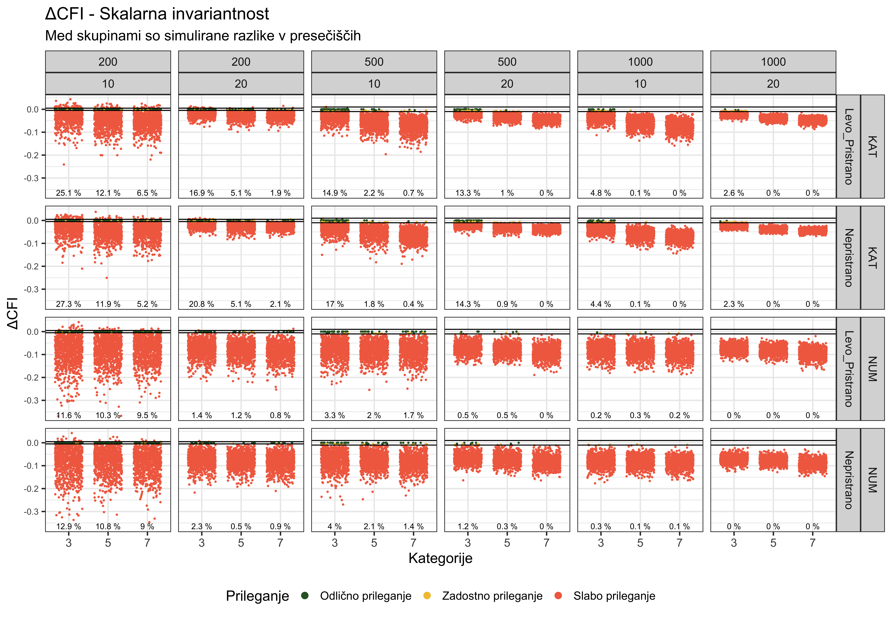

- Vzorci, ko preverjamo pristranost presečišč (Skalarna invariantnost). Ker so presečišča med skupinami enaka, pričakujemo dobro prileganje.
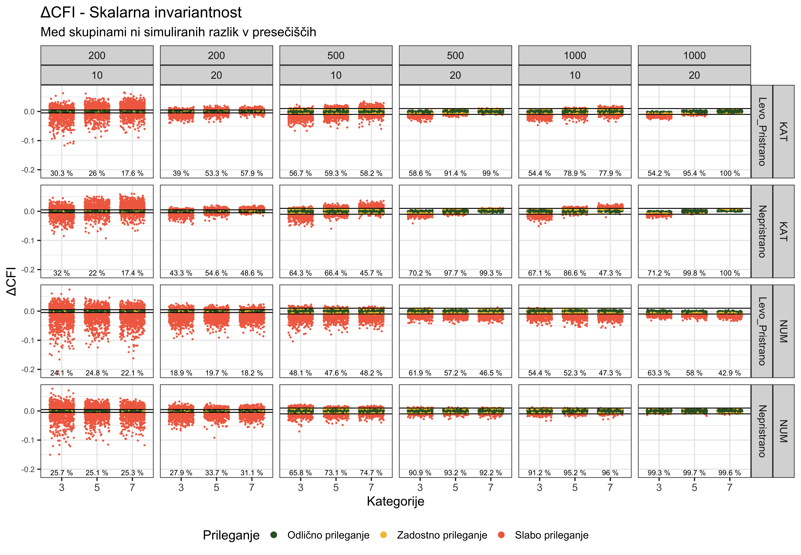
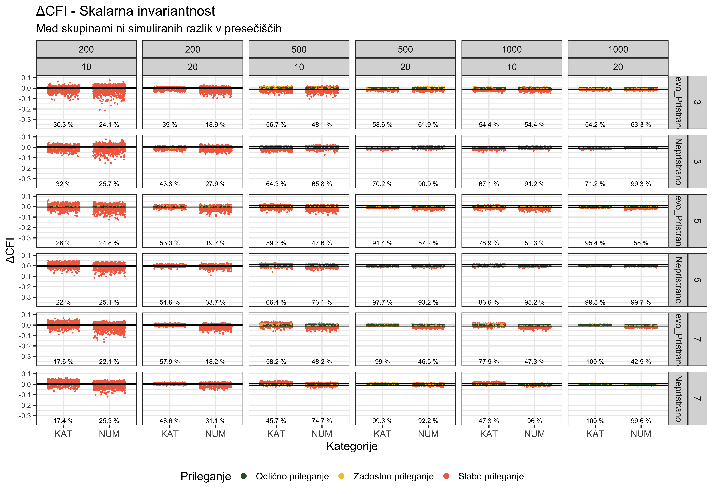
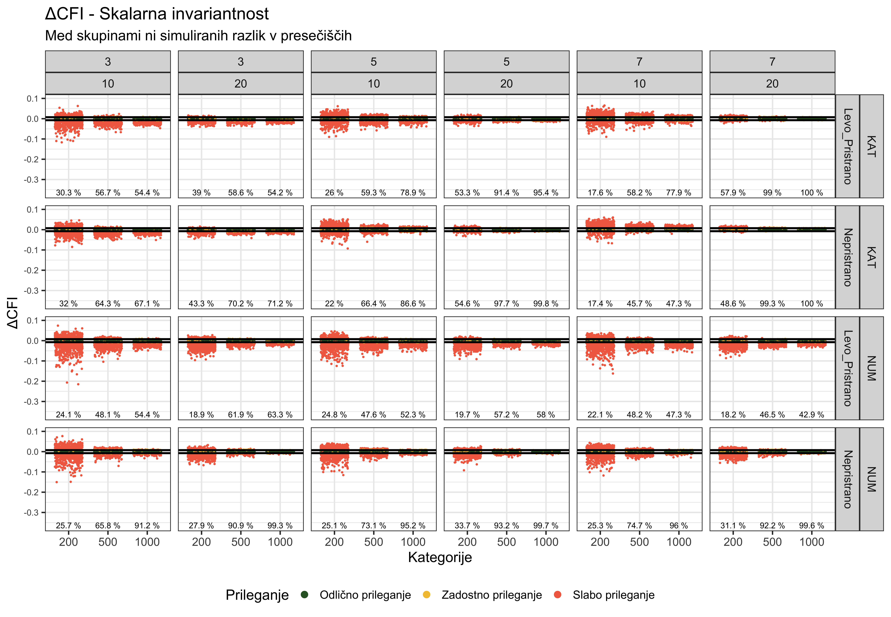
RMSEA
Spodnji sliki prikazujeta ùö´ RMSEA ko primerjamo prileganje med konfiguralnim in metriƒçnim modelom.
- Vzorci, ko preverjamo pristranost faktorskih uteži (Metrična invariantnost). Ker so uteži med med skupinami enake, pričakujemo dobro prileganje.

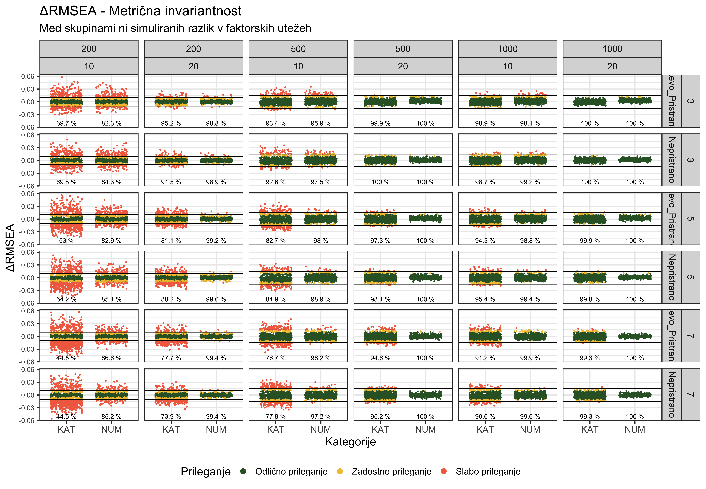
- Vzorci, ko preverjamo pristranost faktorskih uteži (Metrična invariantnost). Ker so uteži med med skupinami različne, pričakujemo slabo prileganje.


- Vzorci, ko preverjamo pristranost presečišč (Skalarna invariantnost). Ker so presečišča med skupinami različna, pričakujemo slabo prileganje.
Warning: Removed 1 rows containing missing values (`geom_point()`).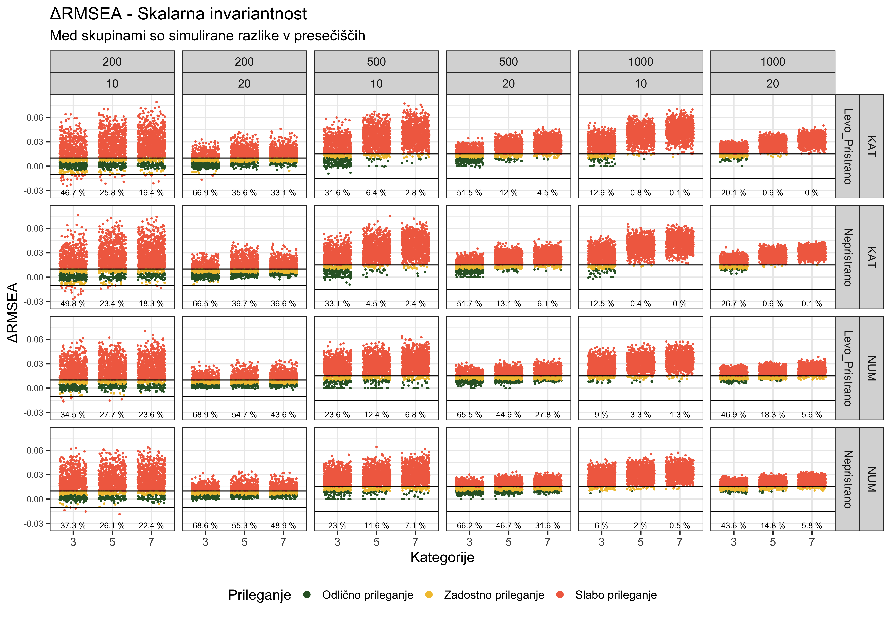
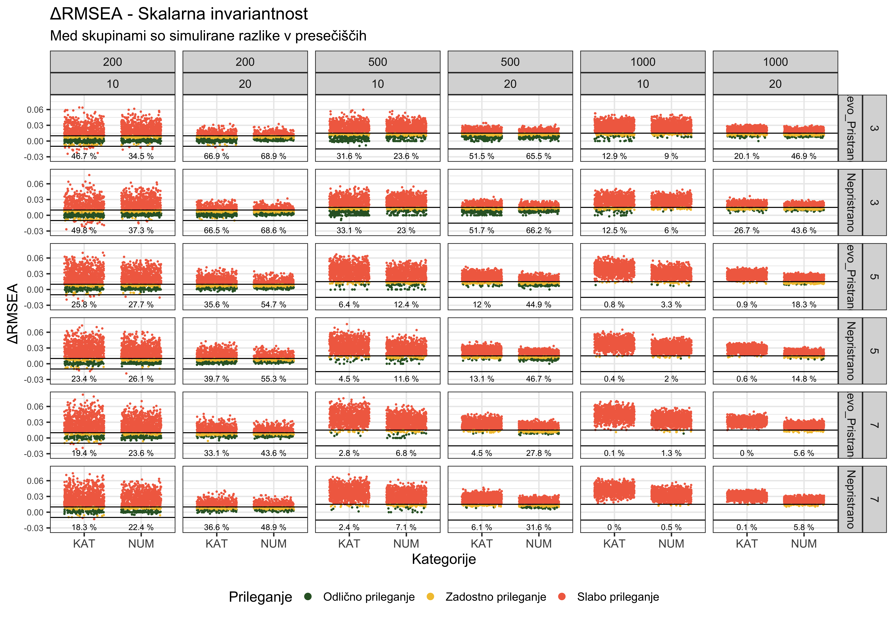

- Vzorci, ko preverjamo pristranost presečišč (Skalarna invariantnost). Ker so presečišča med skupinami enaka, pričakujemo dobro prileganje.
Warning: Removed 1 rows containing missing values (`geom_point()`).

SRMR
Spodnji sliki prikazujeta ùö´SRMR ko primerjamo prileganje med konfiguralnim in metriƒçnim modelom.
- Vzorci, ko preverjamo pristranost faktorskih uteži (Metrična invariantnost). Ker so uteži med med skupinami enake, pričakujemo dobro prileganje.

- Vzorci, ko preverjamo pristranost faktorskih uteži (Metrična invariantnost). Ker so uteži med med skupinami različne, pričakujemo slabo prileganje.

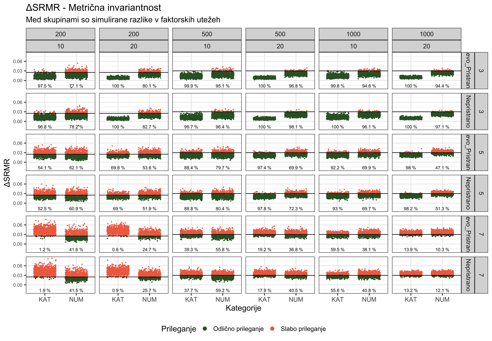

- Vzorci, ko preverjamo pristranost presečišč (Skalarna invariantnost). Ker so presečišča med skupinami različna, pričakujemo slabo prileganje.
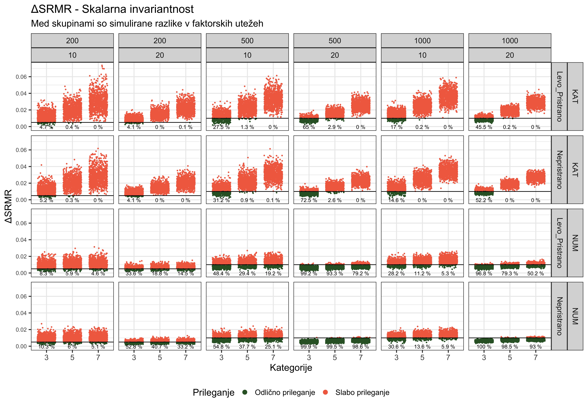

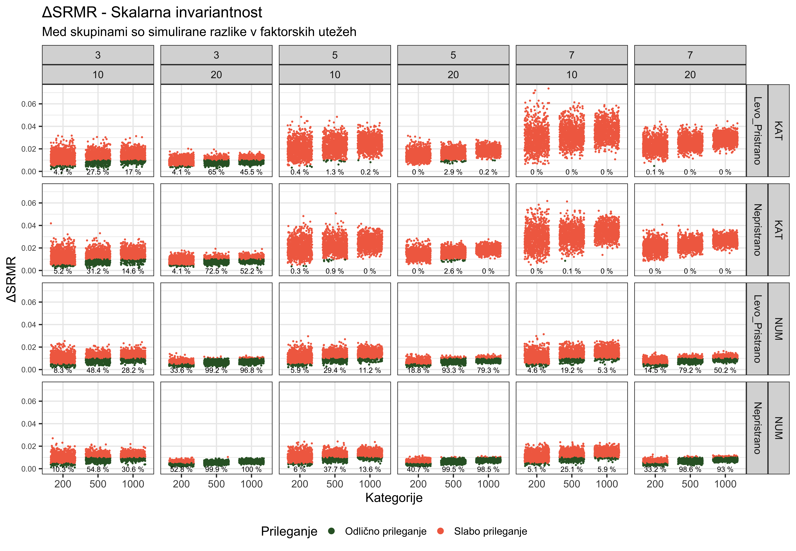
- Vzorci, ko preverjamo pristranost presečišč (Skalarna invariantnost). Ker so presečišča med skupinami enaka, pričakujemo dobro prileganje.
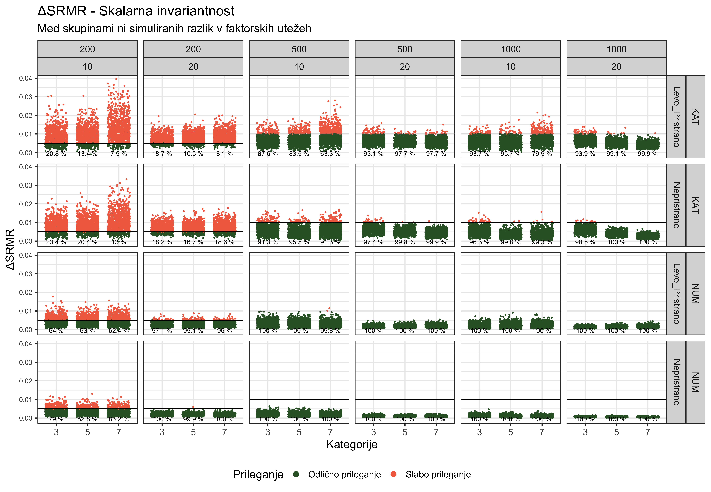

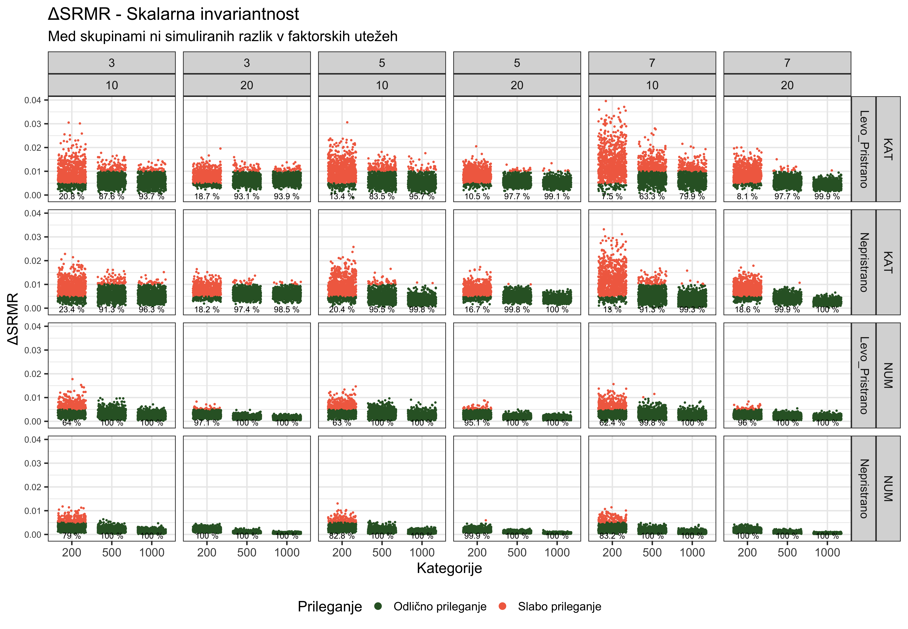
p Vrednosti


Hi kvadrat test


Potrjeni modeli
Odstotek potrjenih modelov metrične invariance glede na CFI,RMSEA in SRMR.


References
Liu, Y., Millsap, R. E., West, S. G., Tein, J., Tanaka, R., & Grimm, K. J. (2017). Testing measurement invariance in longitudinal data with ordered-categorical measures. Psychological Methods, 22(3), 486–506. https://doi.org/10.1037/met0000075
Savalei, V., & Rhemtulla, M. (2013). The performance of robust test statistics with categorical data: Robust test statistics with categorical data. British Journal of Mathematical and Statistical Psychology, 66(2), 201–223. https://doi.org/10.1111/j.2044-8317.2012.02049.x
Shi, D., & Maydeu-Olivares, A. (2020). The Effect of Estimation Methods on SEM Fit Indices. Educational and Psychological Measurement, 80(3), 421–445. https://doi.org/10.1177/0013164419885164
Xia, Y., & Yang, Y. (2019). RMSEA, CFI, and TLI in structural equation modeling with ordered categorical data: The story they tell depends on the estimation methods. Behavior Research Methods, 51(1), 409–428. https://doi.org/10.3758/s13428-018-1055-2
Footnotes
The results showed that DWLS and ULS lead to smaller RMSEA and larger CFI and TLI values than does ML for all manipulated conditions, regardless of whether or not the indices are scaled. Applying the conventional cutoffs to DWLS and ULS, therefore, has a pronounced tendency not to discover model–data misfit. (Xia in Yang, 2019)↩︎
In contrast, MML, DWLS, and ULS have been shown to provide similar results and work well at more modest sample sizes of about 500, especially with indicators that are not highly skewed. They all provide accurate estimates of the factor loadings, and goodness-of-fit statistics with proper Type 1 error rates and sufficient statistical power(Liu idr., 2017)↩︎